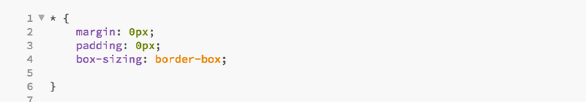
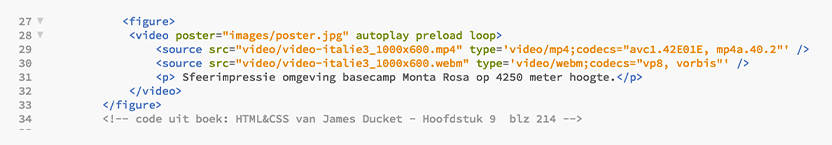
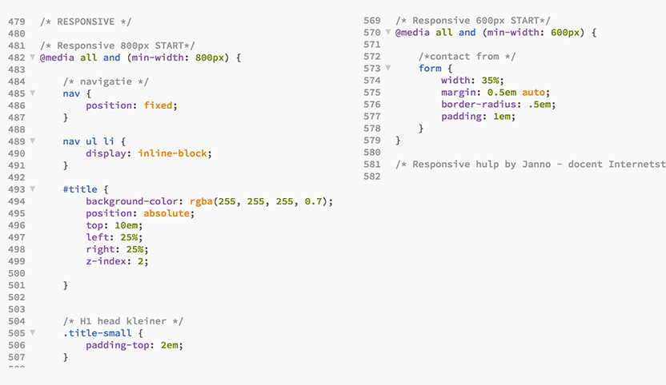

Tijdens het vak Internetstandaarden leer je coderen in HTML en CSS. Nu had ik hier zelf al enige ervaring in, maar ik heb altijd dit mezelf aangeleerd. In dit vak leerde ik de correctie manier van coderen en had ik veel verhelderende momenten waarom ik in het verleden soms iets niet voor elkaar kreeg.
Leermoment Borderbox
In het verleden had ik altijd moeite met elementen tegen elkaar aan te zetten en hoe de margin en padding nou precies werkte. In de les leerde ik van het bestaan van boxsizing- borderbox. Dit zorgt ervoor dat alle margin en padding die je aan een element geeft niet je element groter maken.

Video
Om mijn website visueel aantrekkelijk te maken heb ik geleerd hoe ik een video in mijn header automatisch kon laten afspelen. Volgens de richtlijnen zoals wij leren coderen voeg je zowel een mp4 video toe als een webm video zodat de video in zoveel mogelijk browsers afspeelt. Het kan natuurlijk zijn dat je video toch niet werkt, hier heb ik een video poster voor toegevoegd. Dit is een afbeelding die je ziet in plaats van de error dat de video niet werkt.

Responsive
In de opdracht zou je bonuspunten krijgen als je de website responsive zou maken. Het was me nog nooit gelukt om iets responsive te coderen en dit leek mij een mooie uitdaging. Samen met de docent heb ik dit behandeld, omdat dit geen standaard lesstof was, en heb ik verder onderzoek gedaan op het internet om mijn code werkend te krijgen. De website is nu wel responsive maar als ik de website op mijn Iphone bezoek werkt het toch nog niet helemaal. Ik vermoed dat dit iets te maken heeft met een retina display. Dus dit is nog een aandachtspunt voor de toekomst.

Website ImageNaat Storiegrafie
Benieuwd hoe de website uiteindelijk geworden is? Bekijk dan de website zelf!